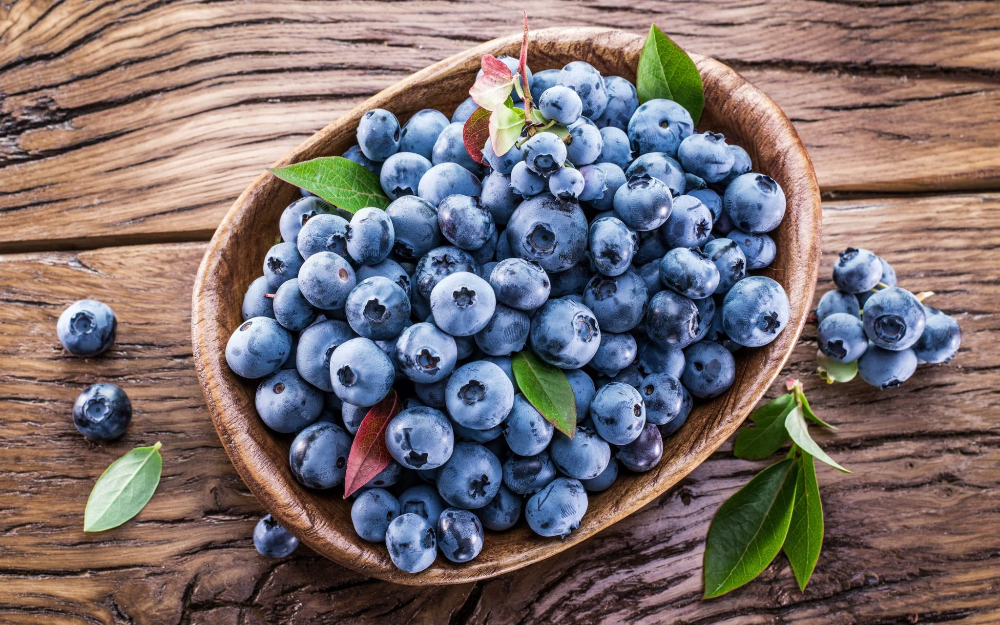

Receta de la mermelada de arandanos
Ingredentes necesarios
Preparacion
Lavar los arandandanos
Ponerlos en una paila junto con el azucar y el jugo del limon expimido.
Cocinar durante 90 minutos a fuego moderado, revolviendo de vez en cuando evitando que se pegue en el fondo y ademas evitar que se vuelque. Bajar el fuego en caso de que la ebullicion suba mucho.
Colocar un platillo en el frezzer para medir el punto de coccion. Cuando se pone una cucharadita sobre el platillo y el contenido no desliza hacia los laterales, es el punto justo.
Apagar el fuego y enfrascar en caliente, tapando rapidamente para lograr el vacio.
Conservar en un lugar fresco y oscuro.
Servir con las tostadas. Acompañar helados. Preparacion de tortas.